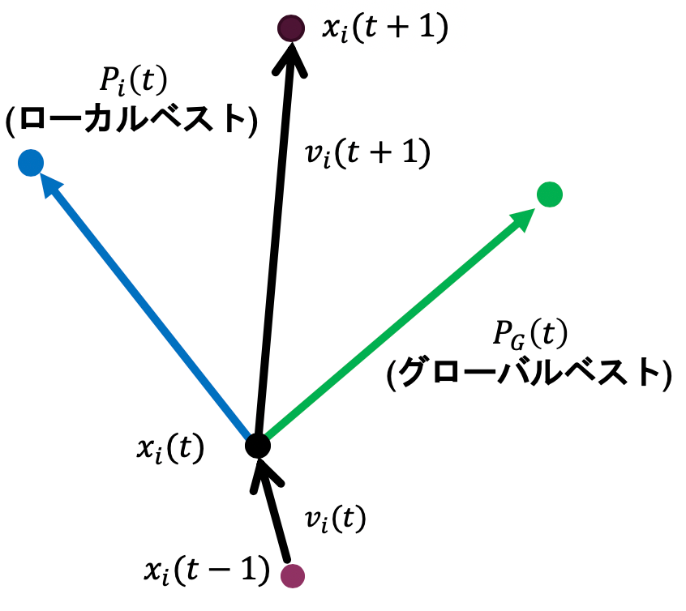
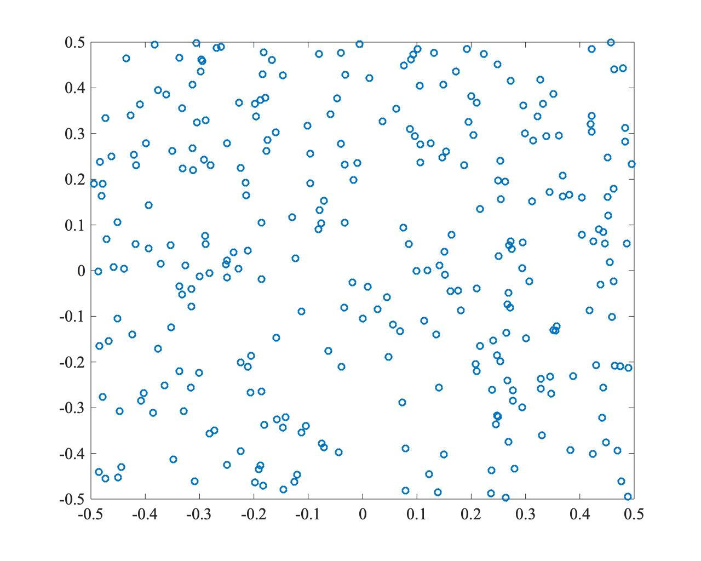
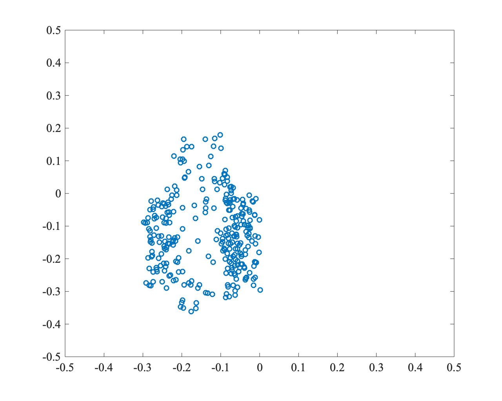
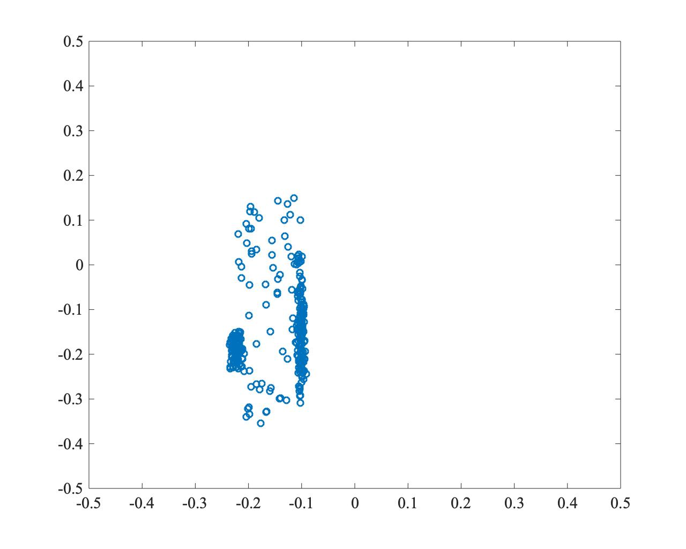
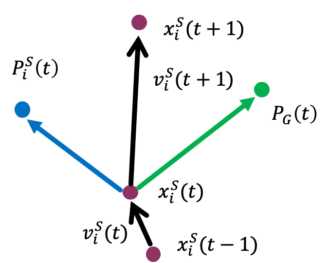
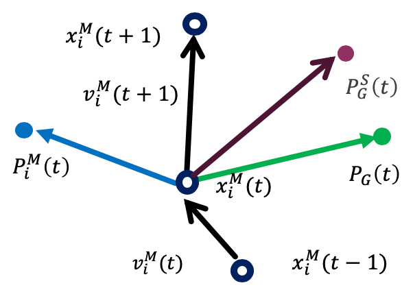
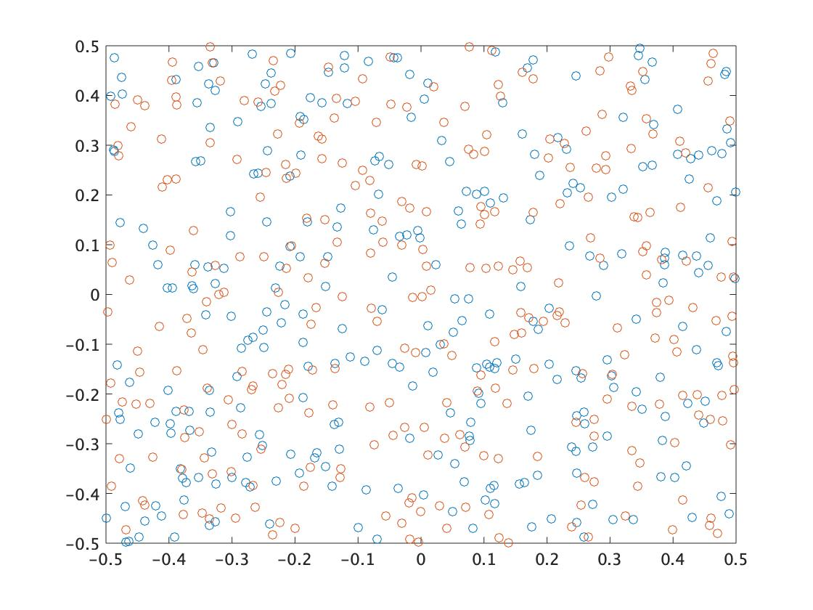
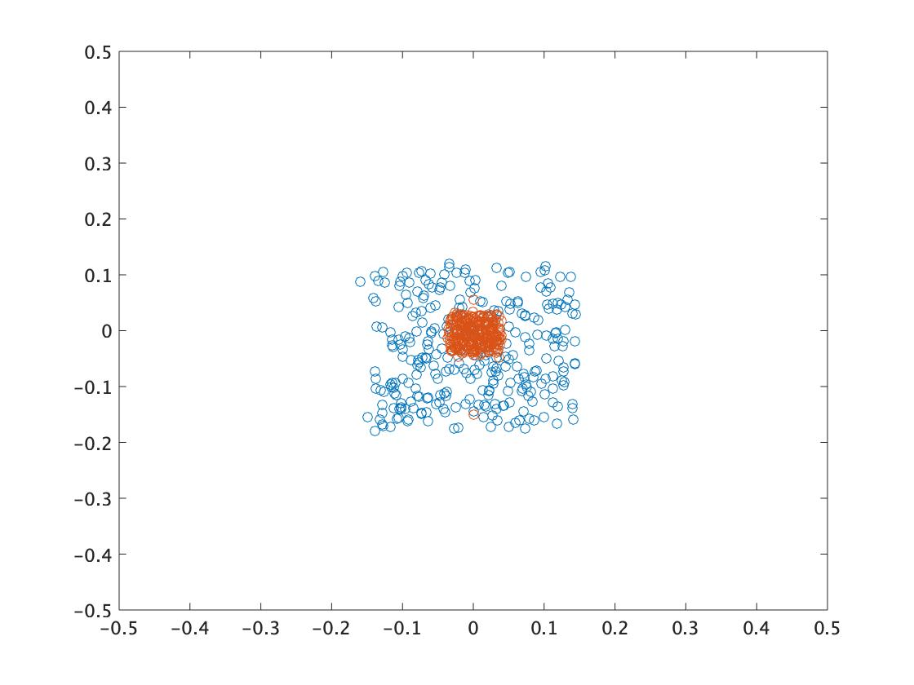
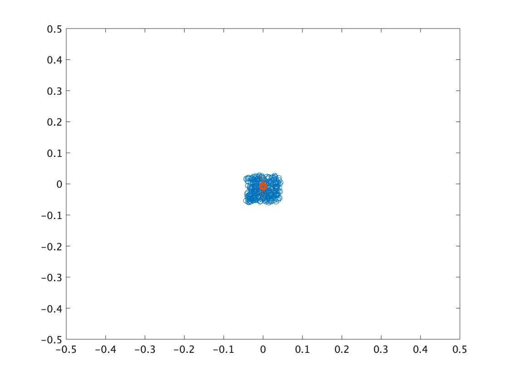

粒子群最適化(PSO:Particle Swarm Optimization)
PSOは，Kennedy and Eberhartによって開発された，魚や鳥などにみられる群行動の餌の在り処の情報が群全体に伝達され，他の個体の行動に合わせて速度を調整しながらすべての個体が一斉に行動しているという点に着目して提案された最適解探索のアルゴリズムである．
PSOでは，位置情報と速度情報を持った粒子(個体)が最適解を求めて探索空間を探索する．各粒子は自分自身の過去の情報と周りの粒子の過去の情報を互いに共有しながら解を探索する．粒子の更新が単純な概念から容易に実装でき，さらに多様な改良が可能である．
粒子の更新
粒子$i,i=1,2,…,n$は時刻$t$における位置情報ベクトル$x_i(t)=(x_i1,x_i2,…,x_m)$と速度ベクトル$v_i (t)=(v_i1,v_i2,…,v_m)$の情報を持っている．
このとき，$n$は粒子数，$m$は次元数である．粒子$i$が各時刻まで探索した解のうち最良の位置情報ベクトルを$P_i(t)$として保持し，粒子群の中で最良の粒子の位置情報ベクトルを$P_G(t)$として群全体で共有する．
以下に位置情報ベクトルと速度ベクトルの更新式を示す．
$$ v_i(t+1)=w{v}_i(t)+C_1r_1(P_i(t)-m{x}_i(t))+C_2r_2(P_G(t)-x_i(t)) $$
$$ x_i(t+1)=x_i(t)+{v}_i(t+1) $$
$w$は慣性項に対する重み，$C_1$は自身の最良位置に対する重み，$C_2$は全体の最良位置に対する重みである．
また，$r_1,r_2∈[0,1]$は各次元ごとに毎期生成される一様分布に従ってランダムに決定される実数値である．
更新の概念図を以下に示す． 
アルゴリズム
PSOのアルゴリズムを以下に示す．
- 粒子の初期生成 初期の粒子の位置情報ベクトル$x_i$と速度ベクトル$v_i$を乱数に基づいて生成する．
- 評価値の算出 各粒子の位置から評価値を決定する．
- 探索開始($t=0$)から現在までの各粒子$i$の最良位置 情報$P_G (t)$の更新，各粒子ごとに，現在までの最良の評価値を記録する．
- 群全体の最良位置情報$P_G (t)$の更新 全粒子の中から，最良の評価値を記憶する．
- 各粒子の速度を計算
- 各粒子の位置を計算
- 終了条件判定 終了条件を満たすまで，Step2からStep6を繰り返す．
アルゴリズムの性質
単純な算術演算により構成され，パラメータ$w，C_1，C_2$への依存性が高いことや，各粒子が群全体の最良位置情報$P_G (t)$の位置に集中してしまうことで局所解に陥り，十分な探索ができないといった問題が存在する．収束速度と多様性の維持のバランスが難しい．
以下に，粒子数100個をランダムに生成し，$(x,y)=(0,0)$からの距離の逆数を評価値としてPSOを行った例を示す． コードはこちら
- $t=0$のとき 
- $t=250$のとき 
- $t=500$のとき 
収束は早いが，局所解に陥っていることがわかる．また，慣性項の影響で集中的に探索することが難しくなっている．
TCPSO(Two-swarm Cooperative Particle Swarm Optimization)
TCPSOでは大域的な探索を行うマスター粒子群と集中的な探索を行うスレーブ粒子群を用いることで，PSOの収束速度と多様性の問題を改善する．2つの粒子群がお互いに情報を共有しながら各粒子が位置と速度の更新を行う．性質の異なる粒子群を用いることで大域探索と集中探索を行うことが可能になり，効率的な解探索が可能になる．
粒子の更新
スレーブ粒子を添字$S$，マスター粒子を添字$M$で表す．以下に位置情報ベクトルと速度ベクトルの更新式を示す．
$$ v_i^S(t+1)=C_1^Sr_1(P_i^S(t)-x_i^S(t))+C_2^Sr_2(P_G(t)-x_i^S(t)) $$ $$ x_i^S(t+1)=x_i^S(t)+v_i^S(t+1) $$ $$ v_i^M(t+1)=w^Mv_i^M(t)C_1^Mr_1(P_i^M(t)-x_i^M(t)) +C_2^Mr_2(P_G^S(t)-x_i^M(t))+C_3^Mr_3(P_G(t)-x_i^M(t)) $$ $$ x_i^M(t+1)=x_i^M(t)+v_i^M(t+1) $$ マスター粒子の速度の更新には，スレーブ粒子群の全体の最良位置$P_G^S (t)$が追加されており，スレーブ群の情報を更新することで多様性を保持しながら大域的な探索をすることが可能になっている． スレーブ粒子とマスター粒子の更新の概念を以下に示す．
-
スレーブ粒子群の更新の概念図 
-
マスター粒子群の更新の概念図 
アルゴリズム
TCPSOのアルゴリズムを以下に示す．
- 粒子の初期生成 スレーブ粒子群，マスター粒子群それぞれの初期の粒子の位置情報ベクトル $x_i^S,x_i^M$と速度ベクトル$v_i^S,v_i^M$を事前に決めた範囲よりランダムに生成する．
- 評価値の算出 各スレーブ粒子と各マスター粒子の位置から評価値を決定する．
- 探索開始($t=0$)から現在までの各粒子の最良位置情報$P_i^S(t),P_i^M (t)$の更新，各粒子ごとに，現在までの最良の評価値を記憶する．
- 最良位置情報の更新 スレーブ群全体での最良位置情報$P_G^S (t)$と，全体での最良位置情報$P_G (t)$の更新を記憶する．
- 各スレーブ群の粒子の速度を計算
- 各マスター群の粒子の速度，位置を計算
- 終了条件 終了条件を満たしていれば終了し，満たさなければStep2に戻る．
アルゴリズムの性質
TCPSOはスレーブ群の収束性から，単峰型の問題に対しては基本的なPSOよりも早く収束させることができる．また，マスター群は多様性を保持しており，単峰型の問題の局所解への対応も可能となる．しかし，高次元，広範囲の問題に対しては，局所解に収束してしまうため多様性の維持が困難になり，適切な探索を行うことが難しい．
以下に，スレーブ粒子100個，マスター粒子100個をランダムに生成し，$(x,y)=(0,0)$からの距離の逆数を評価値としてPSOを行った例を示す．オレンジがスレーブ粒子群，ブルーがマスター粒子群である． コードはこちら
- $t=0$のとき 
- $t=250$のとき 
- $t=500$のとき 
スレーブ粒子群は，慣性項がないため収束が早くより集中的な探索ができるようになっていることがわかる．収束速度と多様性が確保されている．高次元で複雑非線形な問題に対しても，マスター粒子群が局所解を回避，逸脱し，多様な探索をし続けることが重要となる．